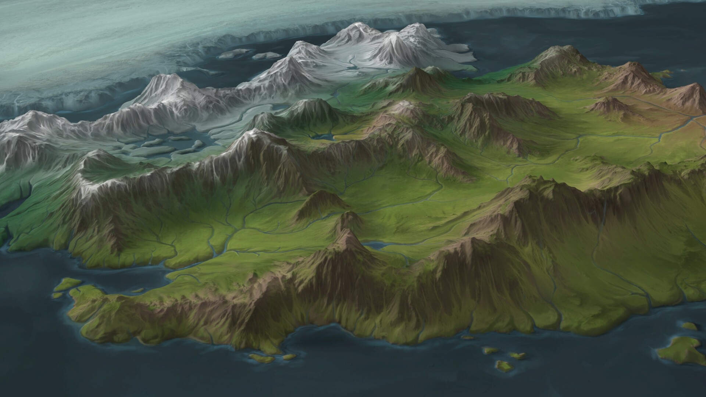

The Lore
League of Legend is home to many worlds that houses a great deal of champions fighting for survival, living in peace, hunting and many crisis. You have many worlds that our champions resides in. You can learn a few can do here.